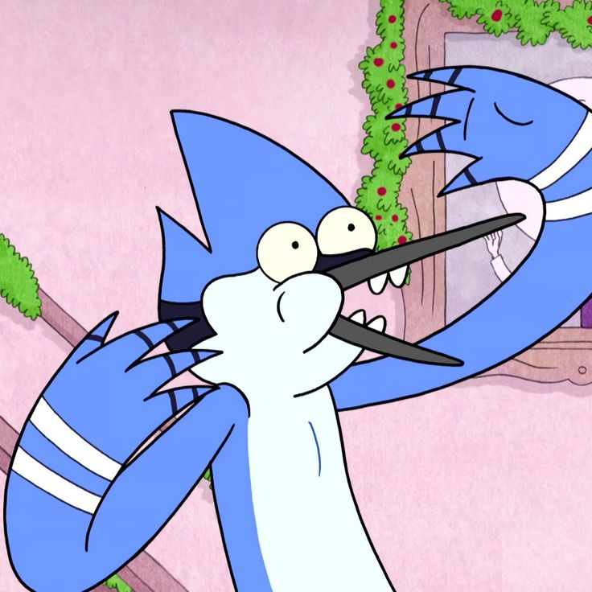
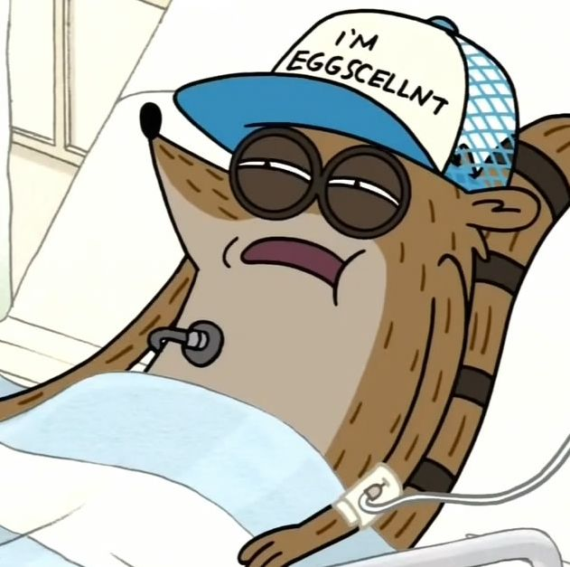
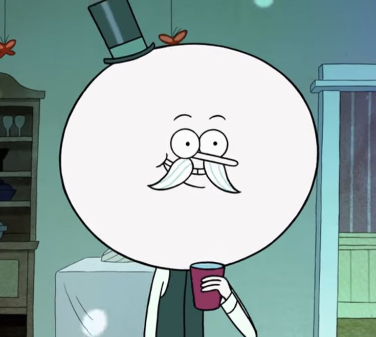
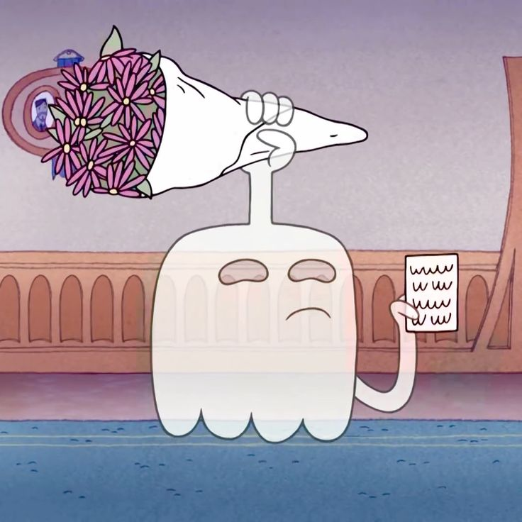

-
Mordecai
Descrição
Mordecai é um jovem galho-azul com um sentimento crescente de responsabilidade, a decência, e da sua própria mortalidade. Mas isso não significa que ele não gostaria de ter um pouco de diversão de vez em quando. Embora ele naturalmente considere o trabalho monótono, esforça-se para manter uma boa reputação e conseguir vingar na vida, uma vez que quase perdeu esta última para evitar ser chamado de preguiçoso, e atestar trabalho extra para pagar por bilhetes para concertos. O defeito mais óbvio de Mordecai é a sua incapacidade de lidar com seus interesses amorosos, como namorar CJ e ser amigo de Margaret.
-
Rigby
Descrição
Rigby Maxwell Thompson ou simplesmente Rigby é um guaxinim brincalhão, preguiçoso e extremamente problemático, é o melhor amigo de Mordecai e trabalha como zelador do parque. A maioria das situações problemáticas que têm ocorrido no show foram causados por Rigby. Aqueles eram ou por acidente ou por necessidades egoístas que ele sente que tem a cumprir. Às vezes, ele tem que acordar Mordecai agitando ele pois Mordecai tem um sono pesado. Em contraste, Rigby é um sono leve, e é geralmente propenso a pesadelos.
-
Saltitão

Descrição
Além de ser o abominável homem das neves, Saltitão é o funcionário mais esforçado e competente do parque. Nas mãos dele tudo flui. Por viver lá dentro há séculos, ele conhece o parque como a palma de suas patas. Ele parece ter um passado interessante e misterioso devido à sua imortalidade. Todo mundo confia nele para resolver problemas sobrenaturais, e ele quase sempre tem a resposta. Tem grande autoestima e orgulho de seu conhecimento e força.
-
Musculoso

Descrição
Mitchell "Mitch" Sorrenstein, mais conhecido pelo seus amigos como Musculoso, é um dos jardineiros do parque. Não se sabe ao certo se Musculoso é um humano, um Frankenstein ou um duende. As brincadeiras de "minha mãe" do Musculoso são semelhantes às de "sua mãe", mas as piadas de Musculoso insultam a se mesmo, em vez de outros, que é a intenção das brincadeiras de "sua mãe". "Essa não, Cara!!"
-
Parulito
Descrição
EPairulito está quase sempre com um humor alegre, rindo mais frequentemente do que o normal, e parece ser muito facilmente fascinado. Ele é realmente o chefe dos jardineiros, mas confia mais em Benson, porque ele não sabe nada sobre como cuidar do parque. Pairulito é aparentemente muito sensível e tende a ser um pouco "estranho", de acordo com outros personagens como Mordecai. Pairulito sempre foi retratado como um personagem normal até eventos no final da sétima temporada e ao longo de toda a oitava, quando começa a manifestar seus poderes. No episódio final, ele sacrifica-se para destruir seu irmão do mal ao jogar-se com ele no sol, salvando o universo e morrendo no processo.
-
Fantasmão
Descrição
Fantasmão é um personagem principal de Apenas um Show. Ele é um fantasma e é o melhor amigo de Musculoso desde o secundário quando ele lhe salvou a vida. Ele consegue criar mãos no seu corpo,porém,não consegue criar pés. Ele não é alguém morto. Ele já nasceu fantasma. Ele é resistente a muita coisa. Mostra isso no episódio "Mamãe Mensal" quando defende o Musculoso de óleo a ferver.